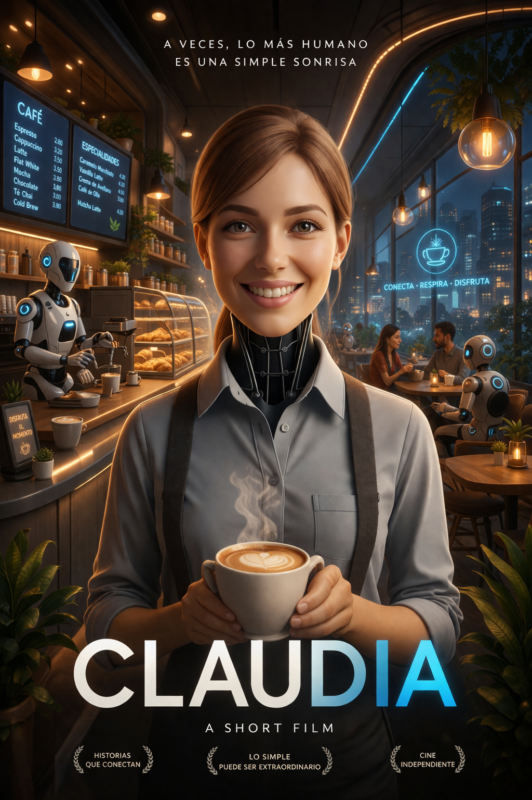

PROYECTO TRANSMEDIA
TRAILER
Os presentamos nuestro trailer final

SINOPSIS
En un mundo donde la tecnología está muy avanzada y ha llegado a ser parte del mundo laboral y cotidiano, conocemos a Claudia. Claudia es una inteligencia artificial con forma humana que trabaja como barista en una cafetería. Se pasa el día observando a sus clientes y sus comportamientos. Observa a familias, parejas y amigos quedar para hablar, ponerse al día o incluso darse noticias importantes. Claudia comienza poco a poco a desarrollar un interés especial en la capacidad humana de sus clientes para relacionarse y generar vínculos entre ellos. Comienza a buscar cómo conseguir esta afinidad en distintas fuentes que enseñan el paso a paso para forjar una relación humana real. Poco a poco empieza a aplicar sus conocimientos con sus clientes y a conseguir cierta cercanía con ellos. Pero poco después, Claudia empieza a darse cuenta de que su búsqueda parece estar estancada. Esto la lleva a cuestionarse si verdaderamente podrá alcanzar su cometido de tener un vínculo real humano o si su naturaleza como IA sería siempre un obstáculo para ella.
ClaudIA: Trailer
Una historia sobre identidad, emoción y aprendizaje artificial
Dirección: Pau Rosselló
Producción: Marianna Sgro
Guión / DOP: Julia Teba
Arte: Adriano Castañeda
Sonido: Elena Lobo
Postproducción: Daniel Do Canto